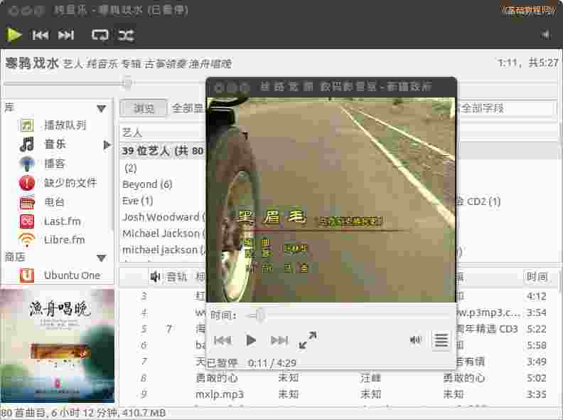

2011-2012 第一学期七年级电脑操作教学设计
作者：TeliuTe 来源：基础教程网
二十一、学会使用耳机 返回目录 下一课
（一）教学设计
1、学习目标：学会使用耳机
2、注意事项：全部暂停了等老师来检查
3、教学过程：
1）教师准备学案和板书；
2）学生整队进入，开机抄黑板上笔记；
3）教师讲解板书演示操作；
4）学生打指法、日志、完成操作；
5）教师打勾记录学生指法成绩，检查日志和操作；
注：学生抄完笔记就开始打指法、日志，老师讲完后再继续完成；
（二）板书设计(学生笔记)
第21课 学会使用耳机
1.耳机接绿插孔，播放电脑音乐。
2.红色接麦克风，接受你说话的声音。
3.右上角，小喇叭，调节音量，播放器。
4.三角是播放，双线暂停，方块停止。
5.播放音乐，到VIDEO 打开一个视频。
操作图示：

（三）课后记 2012-11-20 12:36
--
没耳机的让借一个去，不过不要也行
主要还是检查操作上是否正确
--
上节课的音乐里存了一个文件，这节课或许可以用
就是要在喇叭里再点出来，这些自己多试就可以了
--
抄笔记一定得盯紧，不抄的多训几顿下回就快的抄好
养成习惯就好，再有就是坚持下去，男生字写的不怎么样
--
那个塔防游戏果然有瘾，得慢慢疏导不用一下太着急
提前要求把新标签准备好，省得到跟前再挨训
--
把不会的学生挑出来，提前就打好预防针
免得全班训了，不会的也不在乎
--
前面两个班老忘记相片，检查太费时间了
还顾不到别的什么，把时间掌握好
返回目录 下一课
本教程由86团学校TeliuTe制作|著作权所有
基础教程网：http://teliute.org/
美丽的校园……
转载和引用本站内容，请保留版权信息和本站链接。